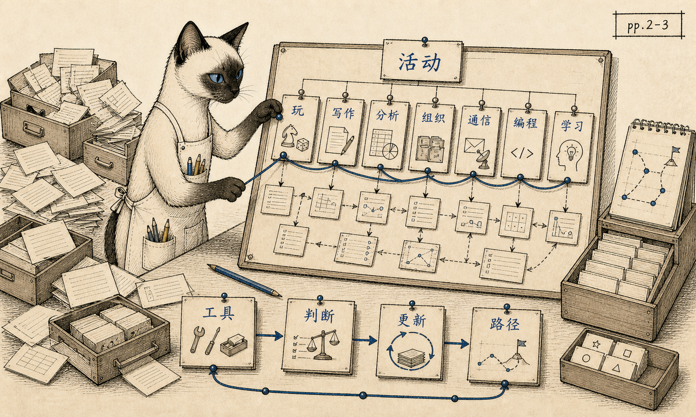
01 / pp.2-3
How to Use This Book
开场方法论
这本书不是软件清单，而是一套按人的活动来判断工具的方法。
开篇已经说明本书的读法：不要从厂商、平台或功能列表出发，而要先看人的活动，再看软件如何成为工具。
从商店货架到家庭书桌，从磁盘盒到电话线，从文字处理到专家系统，1985 年的软件世界正在迅速展开。《Whole Earth Software Catalog 2.0》记录的正是这个现场：人们开始用软件购物、写作、计算、组织信息、学习和连接他人。这本小册子用章节插画带读者穿过这本目录，重新看见早期个人计算机文化的日常面貌。

开场方法论
这本书不是软件清单，而是一套按人的活动来判断工具的方法。
开篇已经说明本书的读法：不要从厂商、平台或功能列表出发，而要先看人的活动，再看软件如何成为工具。
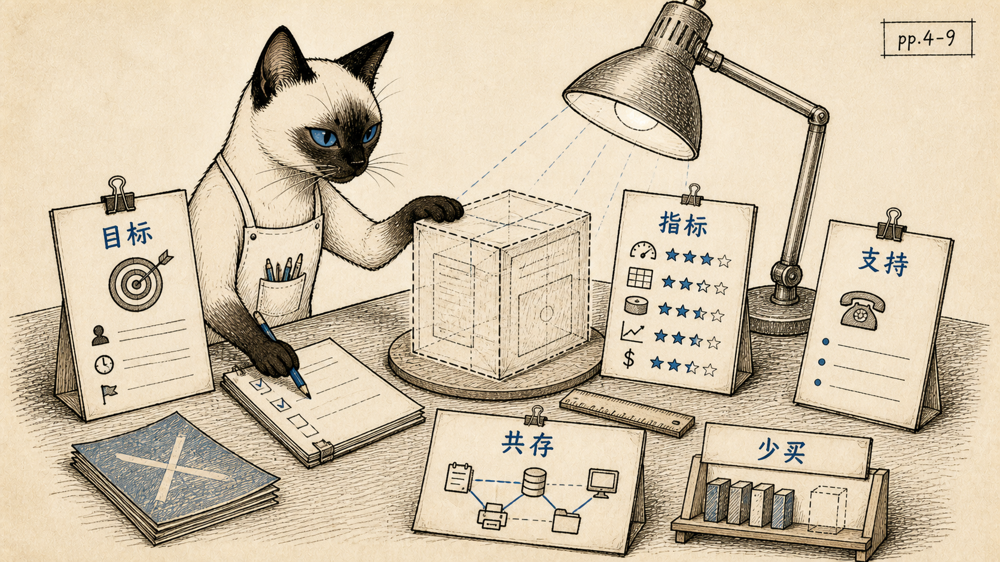
软件选择作为需求分析
买软件之前，先把目标、指标、支持和共存关系说清楚。
这章把购买软件变成一场评估练习：目标能否被观察，指标能否被验证，工具能否和现有流程一起工作。
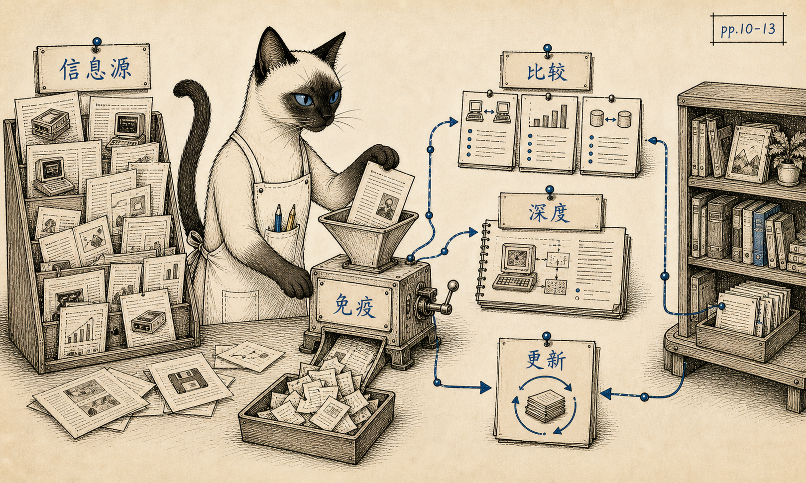
信息生态和判断免疫
软件世界变化太快，读者需要信息生态，也需要免疫系统。
软件世界变化太快，读者需要不止一个信息源；真正重要的是在评论、比较和技术深度之间建立辨别力。
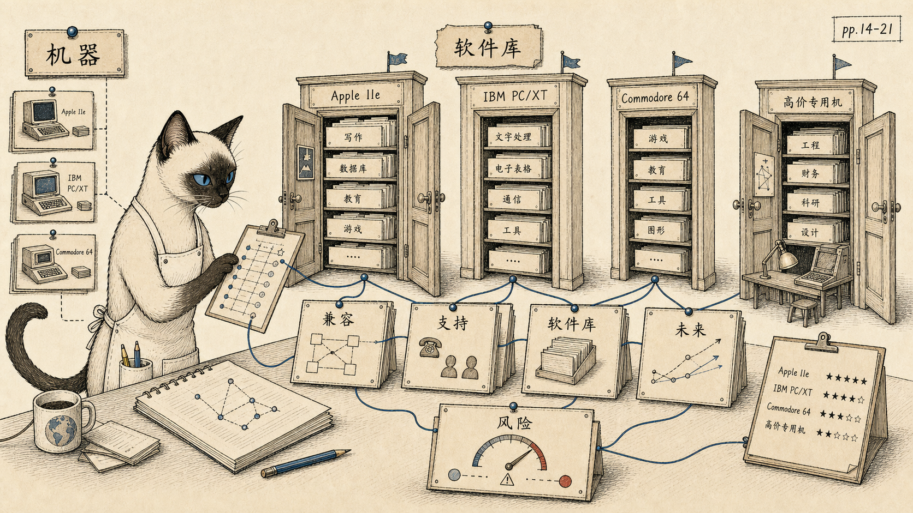
硬件选择就是生态选择
买硬件不是买参数，而是在选择能进入哪个软件世界。
这章提醒读者：每台机器背后都有一座可进入的软件库，也有一批从此被排除在外的工具。
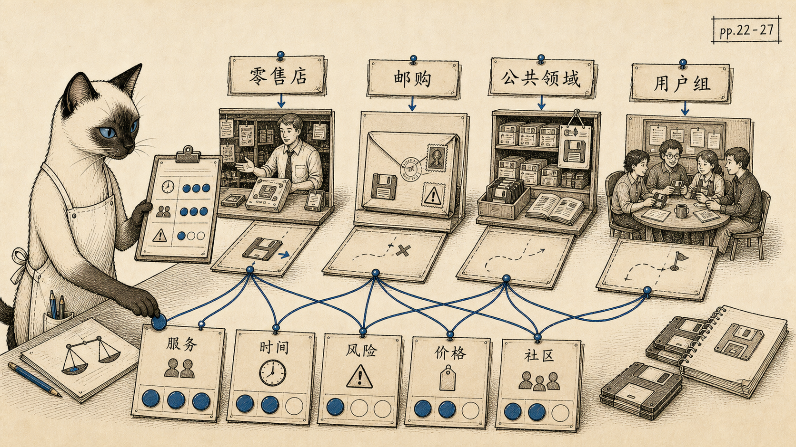
渠道、时间和风险
买软件也是管理时间、风险、服务和社群的渠道选择。
零售店、邮购、用户组和公共领域软件并不是单纯价格差异，而是时间、服务、兼容性和风险的不同组合。
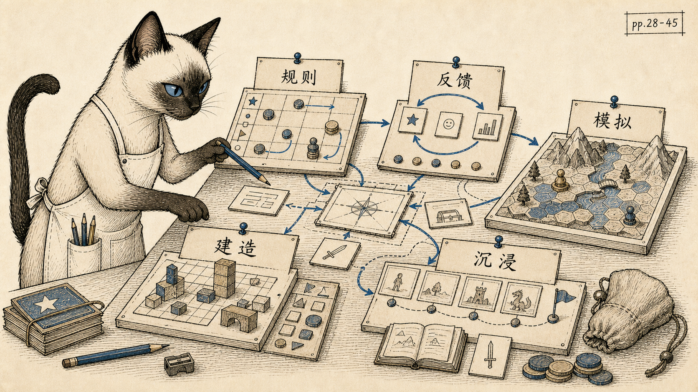
游戏作为交互实验室
游戏不是低级用途，而是大众理解互动、规则、反馈和模拟的实验室。
Whole Earth 把游戏放在前面，因为游戏最早让普通人感到计算机可以回应、模拟、设定规则并允许改造。
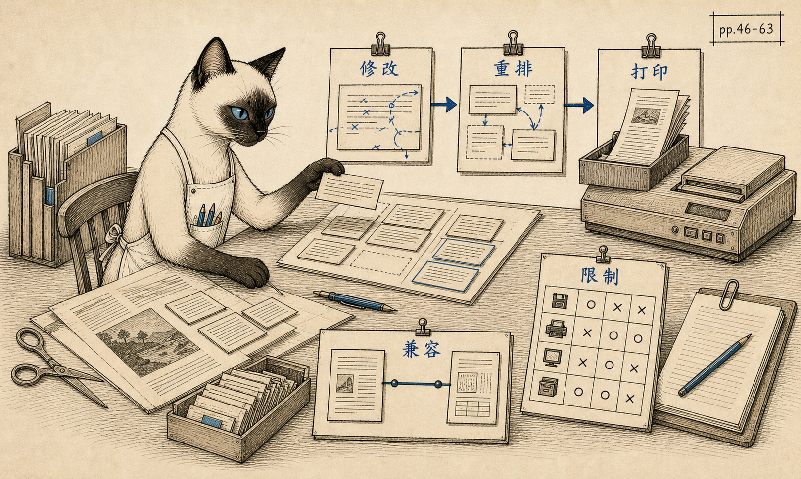
文字处理改变写作动作
文字处理改变的不只是打字速度，而是修改、重排和思考文本的方式。
这里的重点不是打字更快，而是写作者能否轻松修改、重排、打印、传递，并在限制中保持自己的工作节奏。
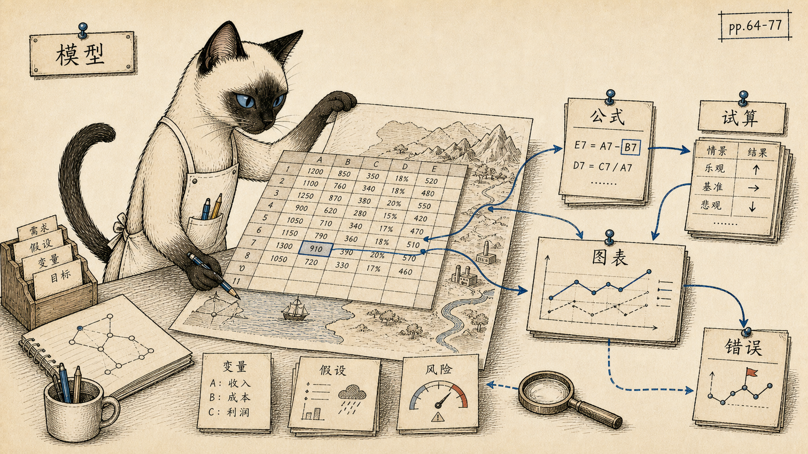
电子表格作为非正式建模
电子表格让非程序员把数字关系变成可操作的未来模型。
电子表格把数字关系变成可操作模型，让非程序员也能试算未来；同时，模型错误也会成为新的风险。
数据库和未来找回方式
数据库不是存东西的箱子，而是设计未来找回方式的工具。
数据库的意义不只是保存资料，而是让人通过命名、分类、字段和关系设计未来的找回方式。
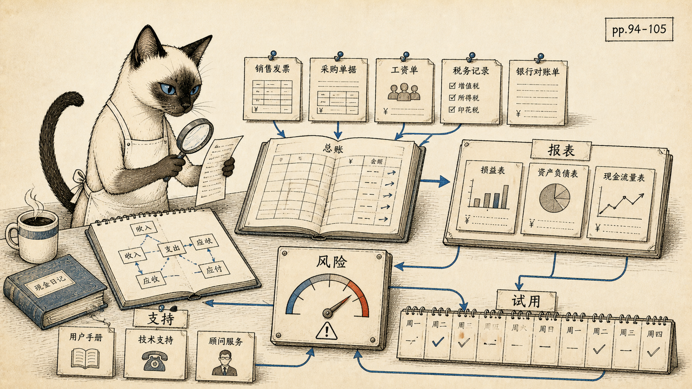
小企业的现金流和风险
会计软件不是让账本好看，而是让小企业及时看见现金流和风险。
会计软件进入企业核心流程之后，电脑不再只是玩具或写作辅助，而是现金流、报表和风险判断的一部分。
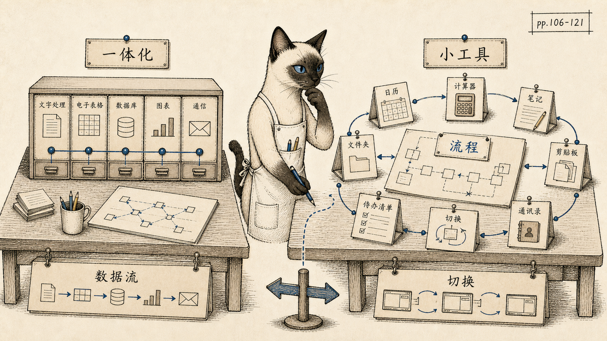
一体化平台和小工具生态
现代办公软件的两条路线早已出现：一体化平台，或围绕工作流的小工具生态。
这章已经能看到现代办公软件的两条路线：把所有功能放进一个环境，或用小工具补强具体工作流。
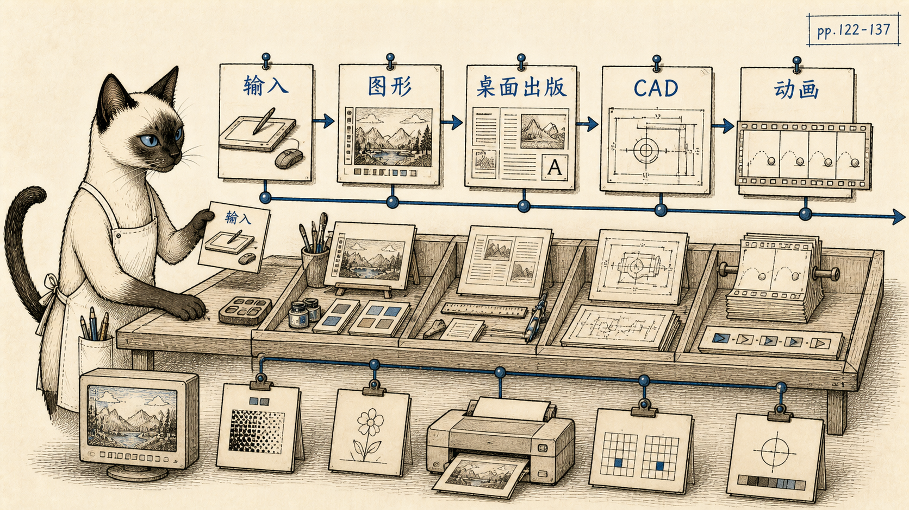
视觉生产民主化
图形软件把儿童涂鸦、桌面出版、商业图表、CAD 和动画放进同一条视觉生产谱系。
图形软件把屏幕、打印机、输入设备和创作工具连在一起，让视觉生产开始从专业设备走向个人电脑。
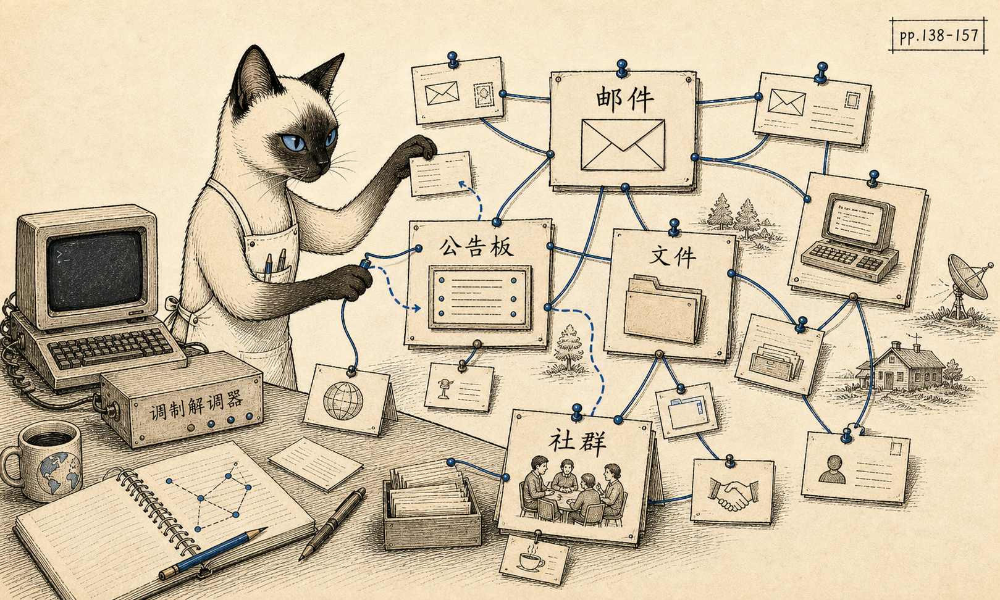
电话线上的社会未来
1985 年的电脑通信不是外设功能，而是个人计算机的社会未来。
这一章几乎是互联网前夜的社会学笔记：电子邮件、公告板、文件传输、在线服务和远程协作已经露出轮廓。
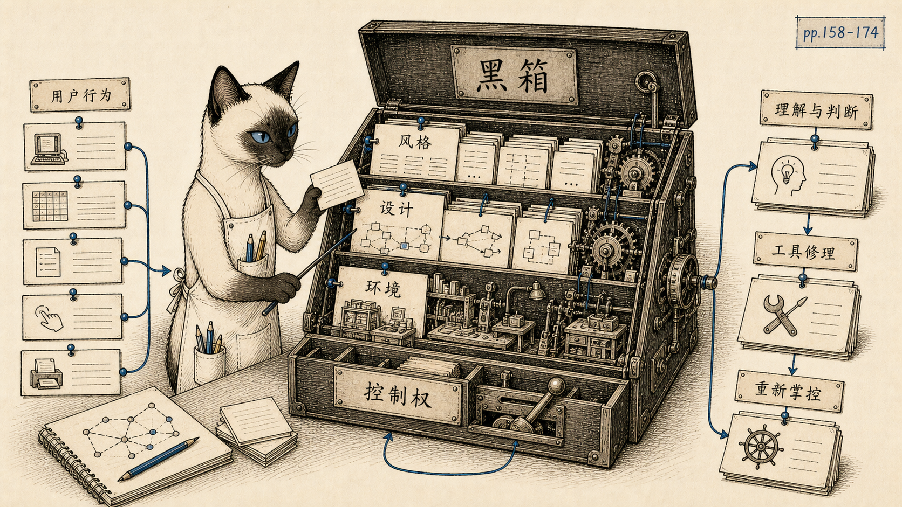
软件黑箱和用户控制权
编程素养不是职业专利，而是理解软件黑箱、判断工具、重新获得控制权的方法。
Programming 在这里不是职业训练，而是一种软件素养：理解黑箱、判断工具、设计流程，并在必要时修补环境。
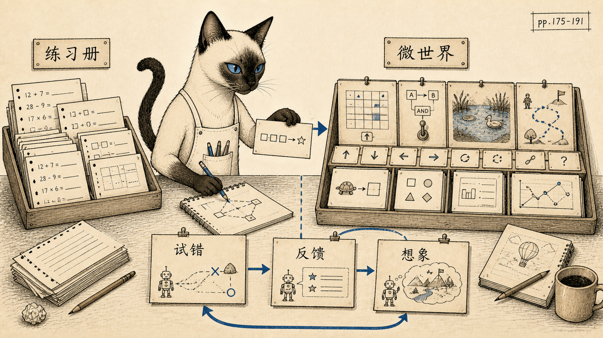
电子练习册与可试错微世界
好的学习软件不是电子练习册，而是可试错、可操纵、可想象的微世界。
Whole Earth 反对把电脑变成电子练习册；它期待的是能回应、能模拟、能让错误变成探索的学习环境。
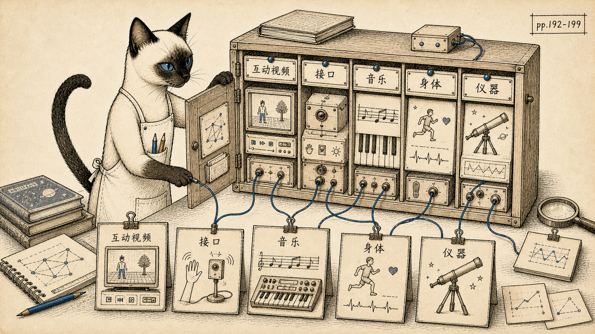
软件渗入生活边界
软件不只属于办公室和学校，它开始连接影像、身体、音乐、仪器和物理世界。
这些杂项显示软件正在越过办公室和学校，进入影像、音乐、身体、家庭设备和物理世界。
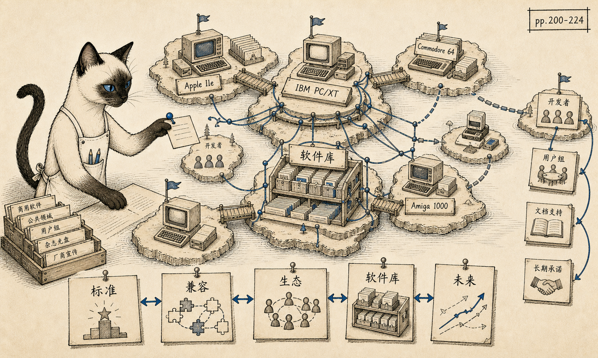
标准、兼容性和生态
标准不是单纯由最好技术决定，而是由软件生态、兼容性和开发者承诺滚出来。
最后的行业更新指出一个持续至今的问题：标准往往不是由最好技术决定，而是由生态、兼容性和承诺滚出来。
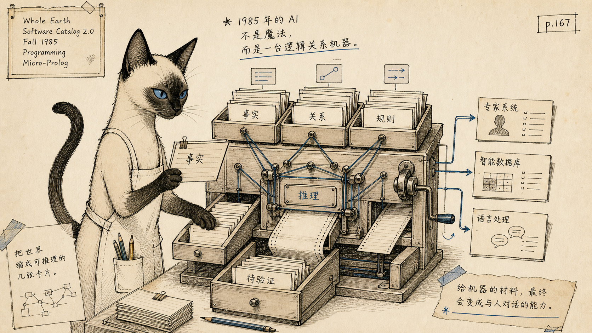
Programming 章页级补充
1985 年的 AI 不是魔法，而是一台逻辑关系机器。
这页把 1985 年的 AI 想象放在逻辑、关系、专家系统、数据库和语言处理的语境里，兴奋但不神化。